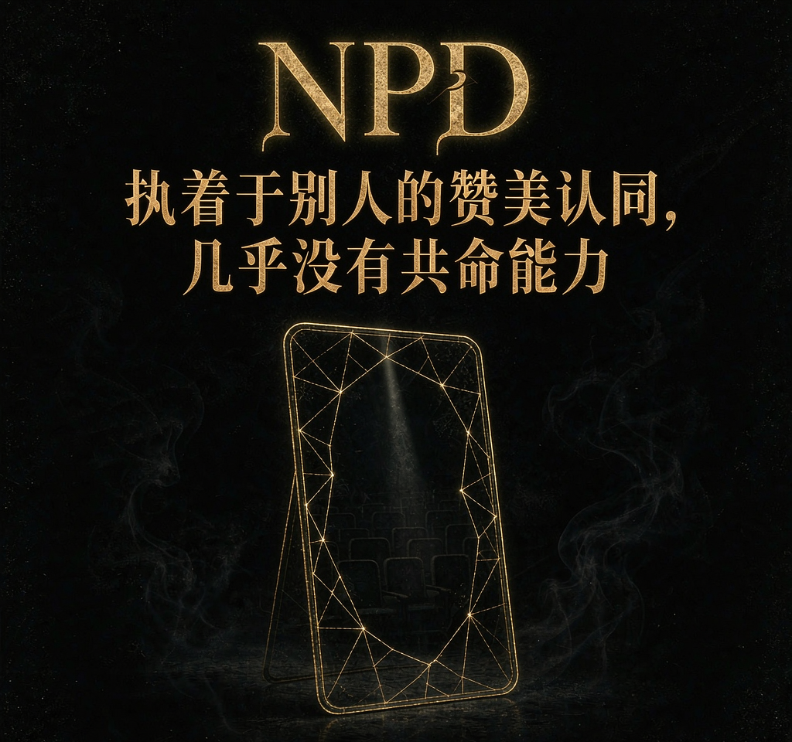
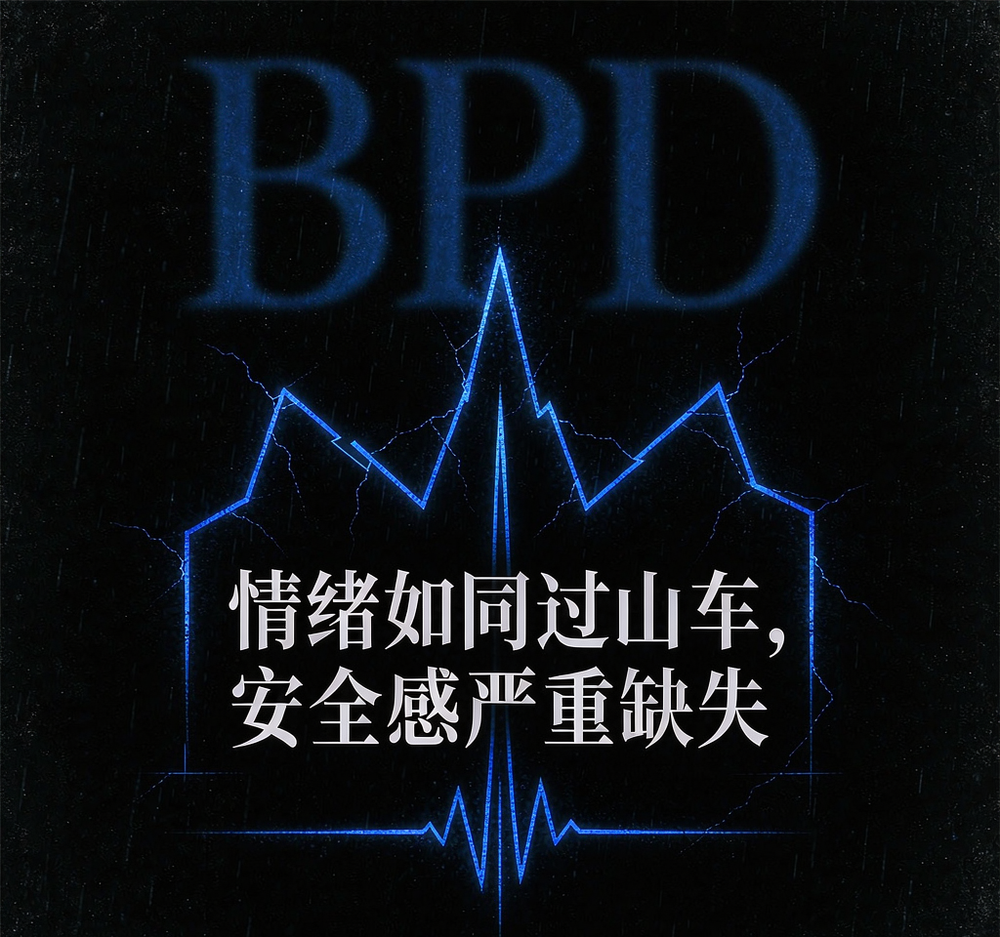
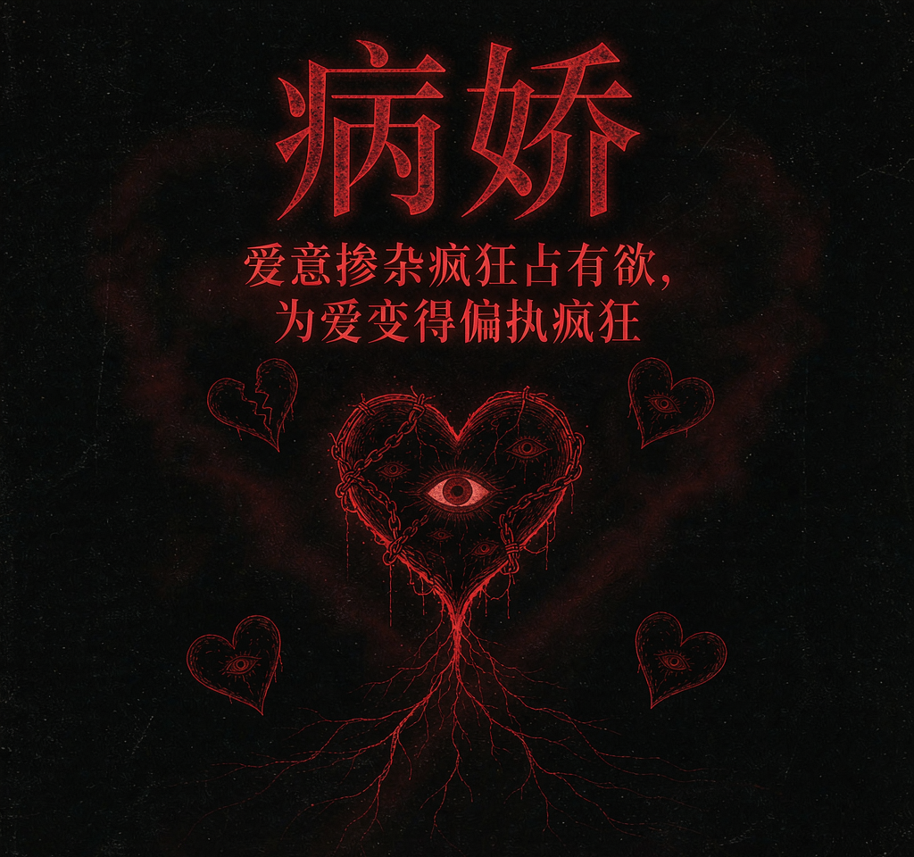
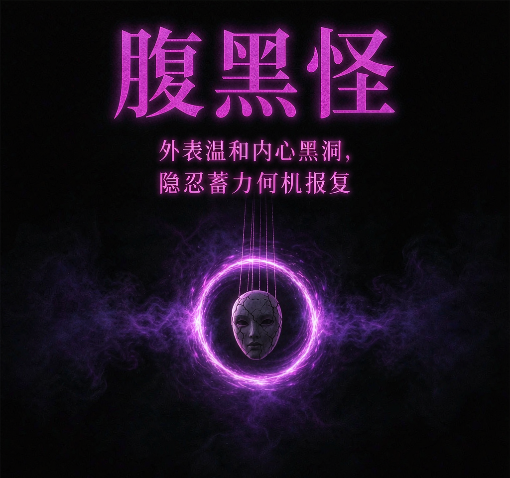
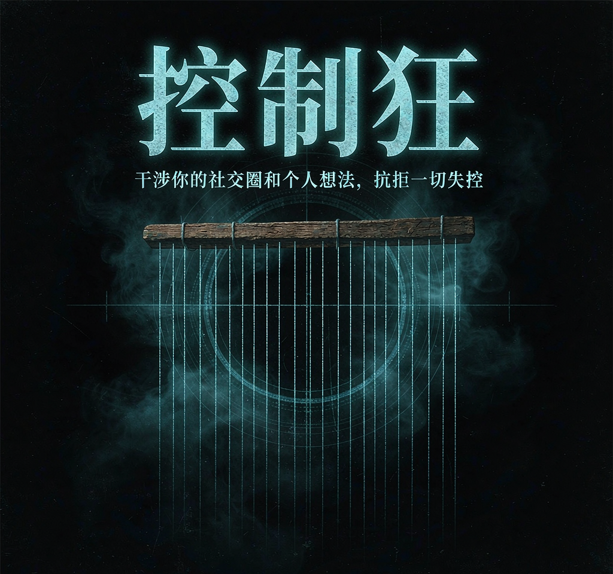
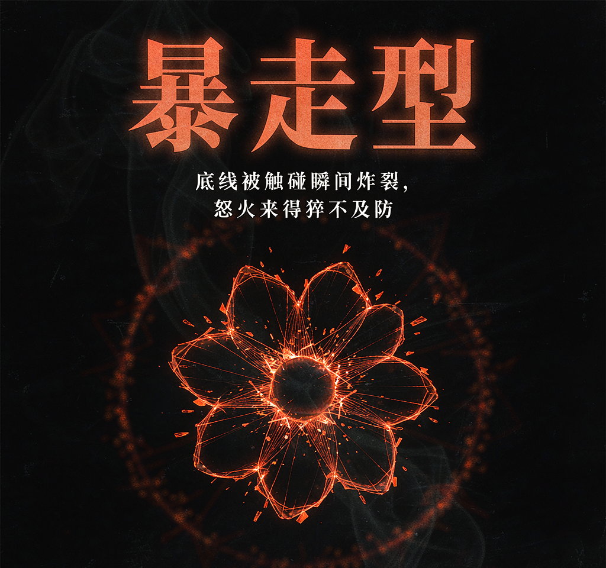
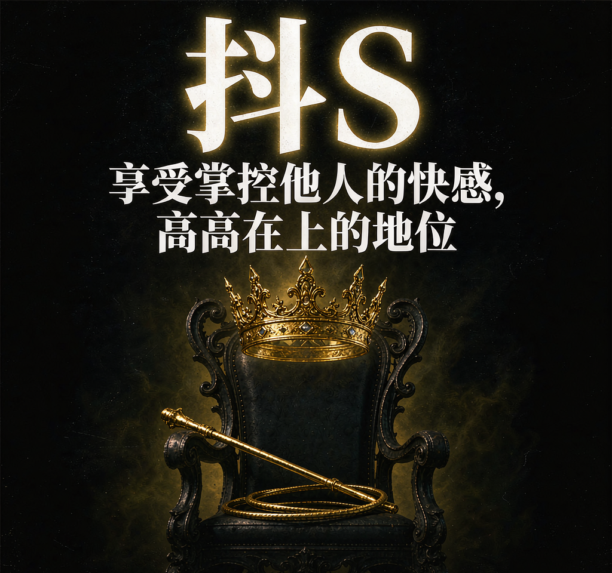
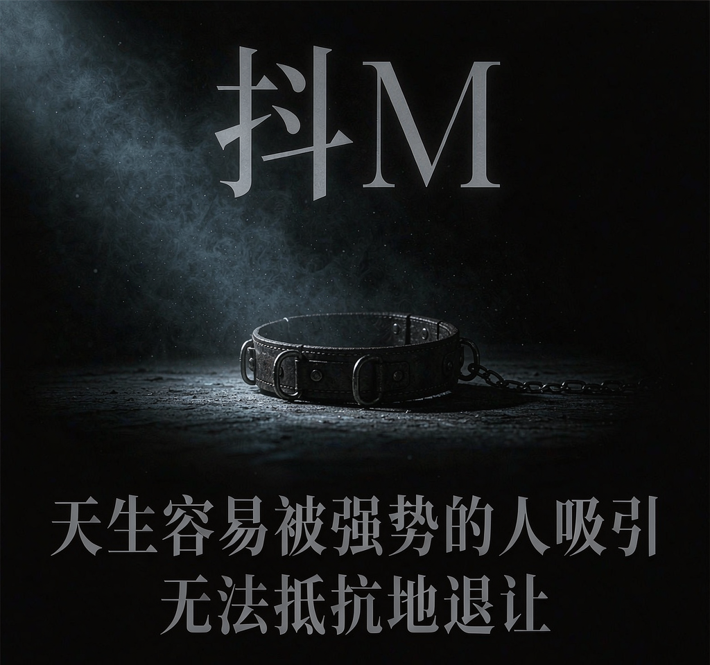
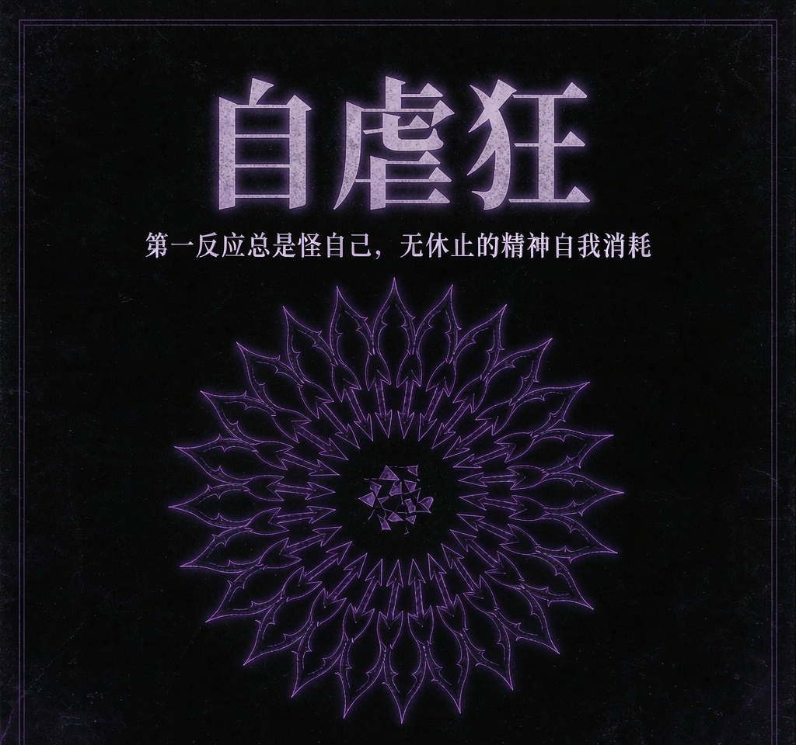

NPD危险 人 格 图 鉴
你体内藏着
哪种危险人格？
二十道题，照见你不愿承认的那一面
每个人心里，都藏着一点危险的小情绪。
它可能是偶尔冒出来的占有欲，也可能是忍了很久的小脾气，或者是表面没事、心里早就记账的小心思。
你以为的自己，和深夜独处时那个自己，真的是同一个人吗？

BPD
病娇
腹黑怪
控制狂
暴走型
抖S
抖M
自虐狂Q U E S T I O N 0 1
可随时返回上一题重新选择
正在照见你不愿承认的那一面…
你 的 危 险 人 格 是
—

照 见
危 险 等 级
人 格 雷 达 图
人 格 占 比
为 什 么 是 你
银 幕 上 的 另 一 个 你
你 的 暗 面 里 还 藏 着
暗 面 标 签
危 险 预 警
自 救 指 南
随时返回修改答案 · 每次结果独立生成
本测试改编自流行心理学人格画像，用于自我观察与情绪表达，
不构成任何医学或心理诊断。
不构成任何医学或心理诊断。
长按上方图片即可保存到手机相册